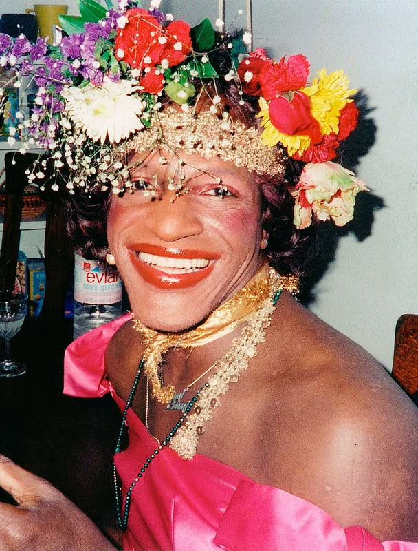
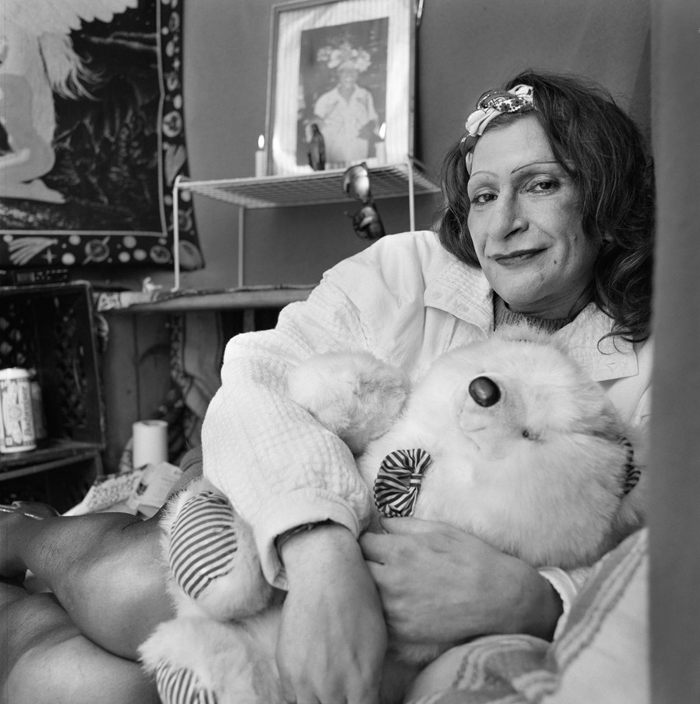
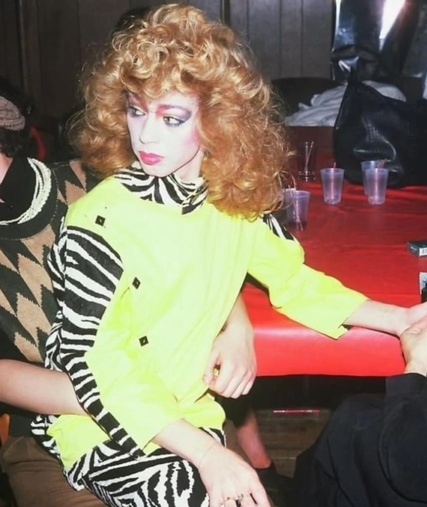
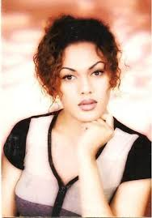
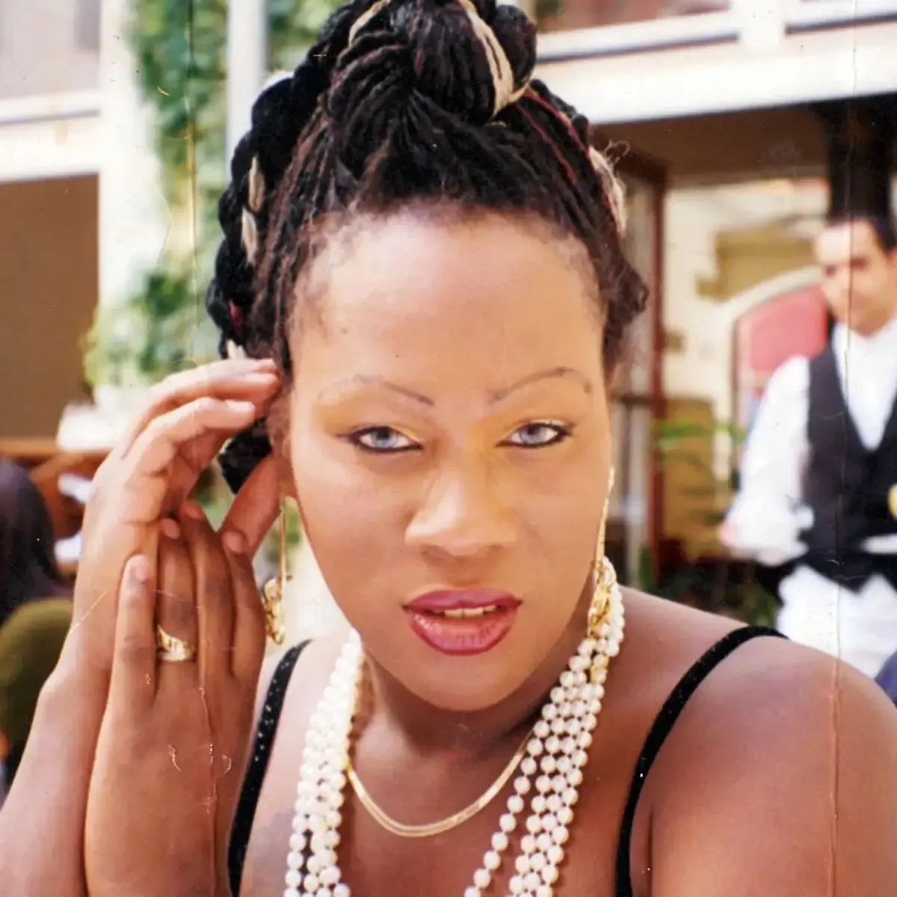
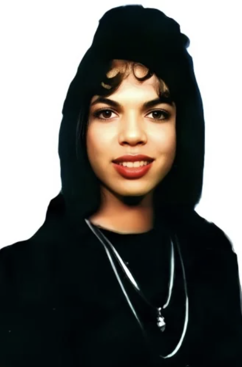
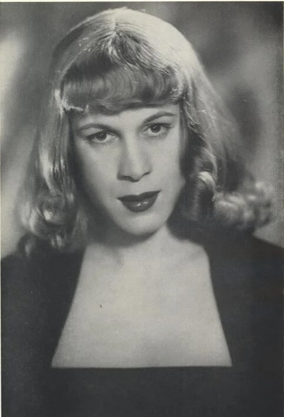
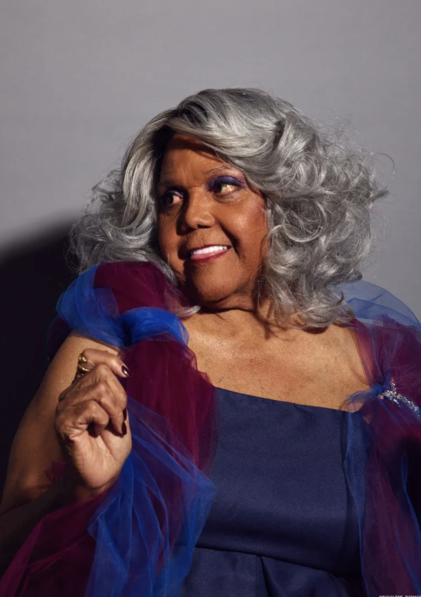
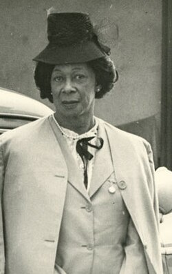

her apartment, a week after her murder by George Stallings.

Marsha P. Johnson (1945-1992)
Sylvia Rivera (1951-2002)
Venus Xtravaganza (1965-1988)
Shalimar Seiuli (1976-1998)
Rita Hester (1963-1998)
Chanelle Pickett (1972-1995)
Roberta Cowell (1918-2011)
Miss Major Griffin-Gracy (1946-2025)
Lucy Hicks Anderson (1886-1954)